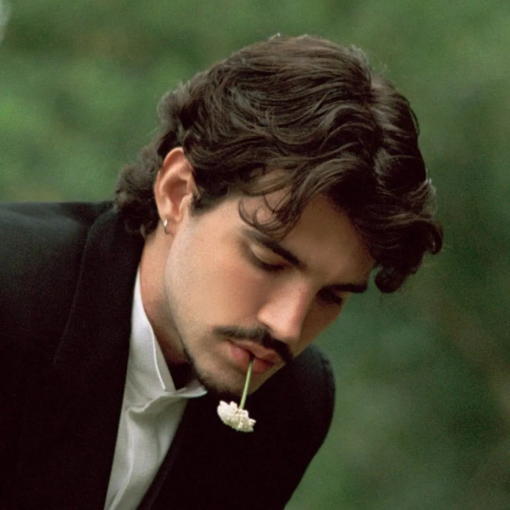

Jão
Memórias Póstumas — o quinto álbum de estúdio, um retrato mais íntimo do artista.

Um pouco sobre o álbum...
Memórias Póstumas é o quinto álbum de estúdio de Jão, lançado em 26 de julho de 2026 através da U.F.O. Produções Artísticas em parceria com a Universal Music, reunindo 14 faixas e cerca de 51 minutos de duração.
O disco sucede Super (2023), que encerrou uma tetralogia conceitual guiada pelos quatro elementos — terra, ar, água e fogo. Após encerrar a turnê em janeiro de 2025, Jão anunciou uma pausa na carreira durante entrevista ao Fantástico.
Diferente do gigantismo do trabalho anterior, voltado para arenas e refrões catárticos, Memórias Póstumas é descrito como um trabalho mais íntimo, literário e emocional — um relato sobre transformar a dor em narrativa, encarando o luto sem tentar suavizá-lo.
O álbum foi apresentado ao público horas antes de seu lançamento oficial, num evento especial no Vale do Anhangabaú, em São Paulo, com Jão sobre um palco em formato de montanha gramada. O evento reuniu 15 mil fãs e bateu um recorde de maior audição presencial, que já pertencia ao próprio artista.
Não é um álbum feito pra impressionar de primeira. É feito pra ficar.
sobre Memórias Póstumas
Curiosidades sobre o álbum:
- É o quinto álbum de estúdio de Jão
- Reúne 14 faixas, com 51 minutos de duração total
- A capa foi fotografada por Hugo Comte
- O evento de lançamento reuniu 15 mil fãs no Vale do Anhangabaú
- É uma produção da U.F.O. em colaboração com a Universal Music Brasil
Faixas do álbum
- 1. Catedral3:41
- 2. O Amor2:57
- 3. Aurora3:40
- 4. Por Você3:32
- 5. Literatura5:03
- 6. Eu Sempre Volto4:24
- 7. Jabuticabeira3:16
- 8. João2:32
- 9. Tudo Me Lembra3:39
- 10. Coincidências3:41
- 11. O Arquiteto3:54
- 12. Curioso3:48
- 13. Passeios Noturnos3:21
- 14. Memórias Póstumas3:59
A faixa-título encerra o disco como quem fecha uma carta antes de selar.
sobre a faixa "Memórias Póstumas"
Merch da era
Junto ao lançamento, a era Memórias Póstumas ganhou uma linha própria de produtos exclusivos, incluindo pôster e camiseta com a identidade visual do álbum — tons de verde-oliva, tipografia serifada e o monograma "MP" em estilo ornamentado.

Ouça o álbum
Você pode ouvir Memórias Póstumas na íntegra aqui!